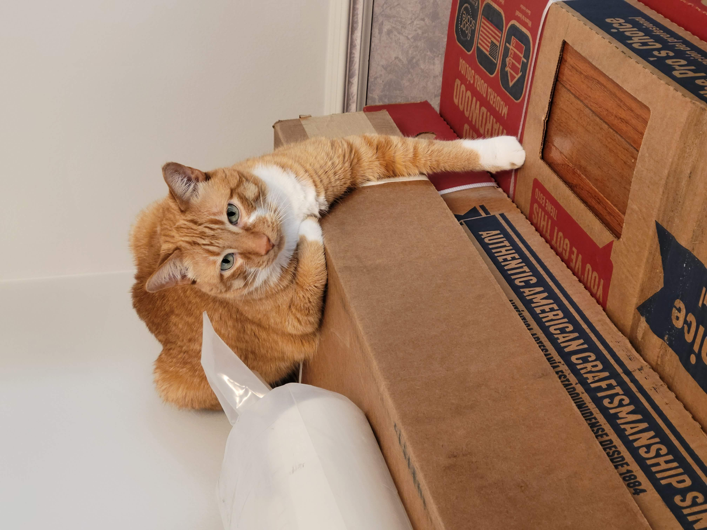
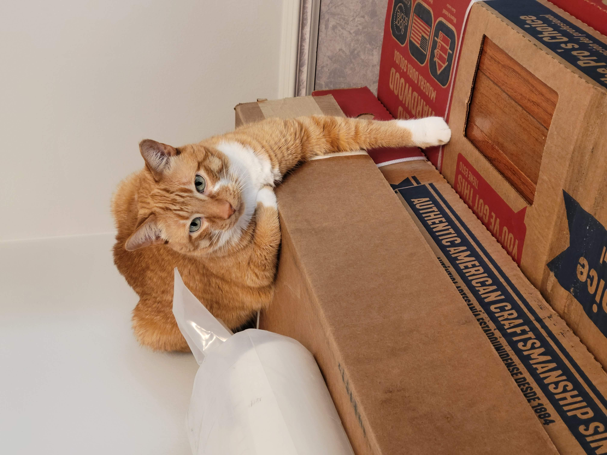

Cheeto (Chicken)

Cheeto is a cat who likes to eat a lot and play a lot. He has an obsession with his grandpa (human) and tries to get outside every single day. If he isn’t causing problems, he is usually hiding in a seven foot tall cat tree and sleeping.
Another name for Cheeto is Chicken, because sometimes he sits very scrunched up and ends up looking like a rotisserie chicken. He was nicknamed this by one of his friends, and now he understands it as his own name. He is about six years old and still acts like a younger cat, despite being middle-aged.
Cheeto's Photo Gallery

 


Likes
- Treats
- Exploring
- My Dad
Cooky

Cooky is an 11 month old Bernedoodle. He likes to play, run around, go on walks, eat snacks and treats (not his own dog food), get pets and belly rubs, and cuddle. You can usually find him playing with his toys in the living room, chilling in the office room with my dad, or cooling off in the garage.
He’s still a baby, but he can get super hyper. Whenever someone rings the doorbell, Cooky gets really excited, barking and dashing towards the front door. He also jumps really high when he’s hyper and wags his tail like crazy. Overall, though, he likes to chill and cuddle just as much as he likes to play.
Cooky's Photo Gallery


Likes
- Dog cookies
- Pets and belly rubs
- Running around the house
Happy

Happy is an old cat. He spends a lot of his day lounging around, in whatever spot he feels is most comfortable at the time. He is an indoor cat, but whenever we open the door to let the dogs out, he always comes running out so he can eat grass.
Happy is pretty friendly with one of my dogs, Katie. They do not interact much, but when they do, it is usually just friendly sniffs. My other dog, Izzy, however, loves biting at Happy. Happy usually will just run away, but sometimes he will retaliate by giving Izzy a smack! It is all in good fun though.
Happy's Photo Gallery


Likes
- Catnip
- Pets
- Sleeping
Hachi

Hachi is a 13 year old Akita. He’s a very old boy who likes to play in snow and run laps around our yard. He is super nice and never bites. He is timid but friendly and will always come and greet visitors with a smile and a few barks.
Hachi is a jealous dog. Although shy, he does not like it when other dogs steal attention from him and he will lightly bite them. When Hachi shared the house with another dog, a small poodle, he would constantly bicker with the poodle when it was being loud.
Hachi's Photo Gallery


Likes
- Snow
- Being around people
- Eating human food
Subin
One of my earliest memories was spending time with a newly born Subin, So in a way,we grew up together. Therefore, from going to the store at the end of the road to eating together, we did everything together.
Subin was somehow not bothered by vaccum cleaners. Even though the loudness of it was able to scare any animals away, Subin enjoyed the chaos of it, opting to even sit on the handle as we vaccum.
Subin's Photo Gallery


Likes
- Hitting people's faces
- Sleeping under the sun
- Laying on a keybaord
Rocky

Rocky is a 17 year old cat who enjoys spending his time laying around. He likes watching birds and trying to talk to them. While he loves birds from afar, he is not a fan of any other animals and enjoys terrorizing the dog, Oliver.
Rocky is also a big fan of eating. He will do anything for a treat and likes any and all foods. He will gladly sneak onto the dinner table to sample any and all foods. If he does not enjoy eating the food, Rocky is fine with playing with it instead.
Rocky's Photo Gallery


Likes
- Eating
- Sleeping
- Attention
Bacon Q Dog

Bacon Q. Dog is a 9yr old labradoodle. He prefers to spend his days lounging among the three different beds/couches that his family has gifted him. He enjoys a walk or two around the neighborhood, as long as he can pretend that he doesn't see any of the other animals to avoid the embarrassment of not wanting to admit he has no wolf-like skills in chasing them.
At night just as the rest of the family is ready to relax, Bacon suddenly wants to release all of his energy. He will place his toys on a mini couch and frantically drag the couch around, giving his toys "a ride." There is also a lot of rolling. Lots and lots of rolling.
Bacon's Photo Gallery


Likes
- Belly rubs
- Playing tug-of-war
- Sneaking onto the couch